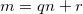

The well-ordering principle states:
The well-ordering principle: Any nonempty set of nonnegative integers has a smallest element.
DUH, you don't say! - seems obvious, doesn't it? This principle is, nevertheless, a very important and fundamental tool for proving other basic principles of number theory.
Consider, for instance, the Division Algorithm:
The Division Algorithm: If m and n are integers with n > 0, then there exist integers q and r, with 0 <= r < n, such that .
Again, this is so basic that one may doubt whether it should even be proved. But the well-ordering principle allows us, in fact, to prove the division algorithm in a rigorous manner:
Let . It is obvious that W contains nonnegative integers. Let . By the well-ordering principle, V has a smallest element, which we'll call r. , so for some q and r >= 0 (by the definition of sets W and V, correspondingly).
Now, what's left to prove is that r < n. Let's assume the opposite, namely that . Rearranging: . By the definition of V, (since it has the form for some integer t and is nonnegative). But recall that we called r the smallest element of V, and , so we have a contradiction.
Therefore, we see that r < n. This completes the proof. Q.E.D.